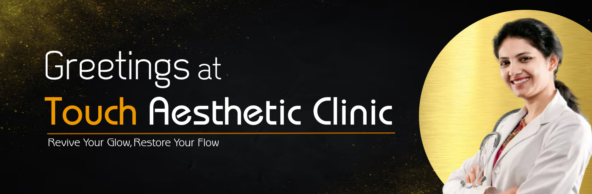
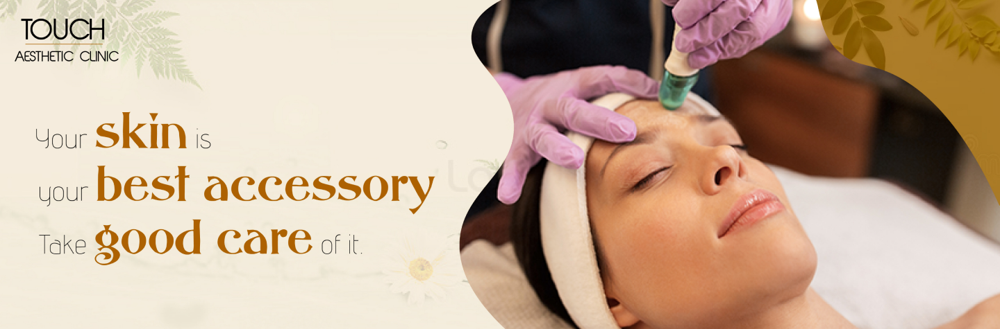

Acne and acne scars can affect your skin’s appearance and your confidence. Our specialized treatment focuses on clearing active acne, minimizing scars, and improving your skin’s overall texture and tone. We offer personalized solutions like laser therapy, chemical peels, microneedling, and advanced skincare products to address your unique needs. These treatments promote collagen production, reduce discoloration, and smooth the skin for long-lasting results. Say goodbye to stubborn acne and scars—embrace clearer, healthier skin with our expert care!
Acne and acne scars can significantly affect one’s confidence, but effective treatments are available. For active acne, topical treatments like retinoids, benzoyl peroxide, and salicylic acid reduce inflammation and unclog pores.For acne scars, treatment depends on the type of scarring. Non-invasive options like chemical peels, microneedling, and laser therapy improve skin texture and tone by promoting collagen production.Smooth away wrinkles and add volume to your skin with FDA-approved injectable treatments, ensuring a natural and youthful look.
Topical Treatments include brightening agents like Vitamin C, niacinamide, and kojic acid, which inhibit melanin production. Retinoids accelerate cell turnover, while sunscreens with broad-spectrum SPF prevent further pigmentation.Pigmentation correction focuses on reducing dark spots, melasma, and uneven skin tone caused by sun exposure, hormonal changes, or acne scars. Effective treatments combine professional procedures and targeted skincare to restore a radiant complexion.
Scar treatment aims to improve the appearance of scars caused by injuries, surgeries, or conditions like acne. The choice of treatment depends on the type of scar, such as atrophic (indented), hypertrophic (raised), or keloid scars.Topical Treatments like silicone gels or sheets help flatten raised scars and improve texture. Brightening agents such as Vitamin C and niacinamide target discoloration. Over-the-counter creams with retinoids can also enhance skin renewal.
Caring for sensitive skin requires a gentle and mindful approach to avoid irritation. Use a mild, fragrance-free cleanser and wash with lukewarm water to protect your skin's natural barrier.Always apply moisturizer after cleansing to lock in hydration.Protect your skin from the sun with mineral sunscreen containing zinc oxide or titanium dioxide, and wear protective clothing when outdoors.Specially formulated facials using gentle, non-irritating products to cleanse, hydrate, and calm sensitive skin without causing reactions.
Chemical peels are skin-resurfacing treatments that use chemical solutions to remove the top layers of the skin, revealing a smoother, more radiant complexion.Peels are categorized into three types: superficial, medium, and deep, depending on the intensity and depth of treatment. Superficial peels use mild acids like alpha-hydroxy acids (AHAs) to gently exfoliate the outer layer.A chemical peel is a non-invasive skincare treatment that uses a chemical solution to exfoliate and remove damaged skin cells from the surface, revealing healthier, smoother skin underneath. This treatment can help with a variety of skin concerns, including acne, acne scars, hyperpigmentation, and uneven texture.
Microneedling is a minimally invasive cosmetic procedure that stimulates skin regeneration by creating tiny, controlled micro-injuries on the skin's surface using fine needles.The treatment is widely used to address concerns such as acne scars, fine lines, wrinkles, enlarged pores, and uneven skin tone.Microneedling is a minimally invasive procedure that involves using tiny, fine needles to create micro-injuries in the skin's surface. These controlled injuries trigger the body’s natural healing process, stimulating collagen and elastin production, which helps improve skin texture, tone, and overall appearance. .
IV glutathione is a popular treatment for skin lightening and brightening. Glutathione, a powerful antioxidant naturally present in the body, plays a key role in reducing oxidative stress.Administered intravenously, this method allows glutathione to enter the bloodstream directly, ensuring better absorption compared to oral supplements.Glutathione is a powerful antioxidant naturally produced in the body. It neutralizes free radicals, detoxifies harmful substances, and supports cellular repair. When administered through IV therapy, glutathione is absorbed directly into the bloodstream, ensuring maximum effectiveness for skin lightening and rejuvenation.
Hair loss affects many individuals and can result from factors like genetics, hormonal changes, stress, or medical conditions. A range of treatments is available to address hair loss, depending on its cause and severity.Medications like minoxidil (a topical solution) and finasteride (an oral pill) are FDA-approved and widely used to promote hair regrowth and prevent further loss.Hair loss can be a distressing experience, but with the right approach, it’s possible to restore your hair’s health and vitality. Our Hair Loss Solutions are designed to address the root causes of hair thinning and hair fall, offering effective, personalized treatments for men and women.
Hair restoration treatments offer solutions for individuals experiencing hair thinning or loss due to genetics, aging, stress, or medical conditions.Medications like minoxidil and finasteride are FDA-approved for promoting hair growth and reducing hair loss.Hair restoration is a medical procedure designed to treat hair loss and promote hair regrowth. It involves various methods, including non-surgical treatments and surgical options, to help restore natural hair growth, improve density, and enhance overall hair appearance.
Scalp treatments are essential for maintaining a healthy foundation for hair growth and addressing issues like dryness, dandruff, itchiness, and excessive oil production. Treatments may include deep cleansing to remove buildup, exfoliation to eliminate dead skin cells, and hydration therapies to restore moisture balance.A well-nourished and healthy scalp is the foundation of strong, beautiful hair. Our Scalp Treatments are designed to target common scalp issues such as dandruff, dryness, excess oil, and irritation, creating the perfect environment for hair growth and vitality.
Hair rejuvenation refers to a range of treatments designed to restore the health and appearance of hair that is thinning, damaged, or showing signs of aging. Treatments may include deep cleansing to remove buildup, exfoliation to eliminate dead skin cells, and hydration therapies to restore moisture balance. One common method is Platelet-Rich Plasma (PRP) therapy, where a patient’s own blood is processed and injected into the scalp to promote natural hair regeneration.
Laser and aesthetic procedures have become popular for enhancing skin, hair, and overall appearance without the need for invasive surgeryLaser hair removal is one of the most common aesthetic treatments, using concentrated light to target and permanently reduce unwanted hair.Laser and aesthetic procedures are non-invasive or minimally invasive treatments designed to address a variety of skin concerns, enhance appearance, and promote skin health. These treatments use advanced technology to provide targeted solutions for issues like aging, acne, pigmentation, and body contouring.
Laser hair removal is a popular, non-invasive procedure designed to permanently reduce unwanted hair. It uses concentrated light to target and destroy hair follicles, preventing future hair growth.This method is suitable for many areas of the body, including the face, legs, arms, underarms, and bikini line. It works best on individuals with fair skin and dark hair, as the contrast allows the laser to effectively target the hair pigment.